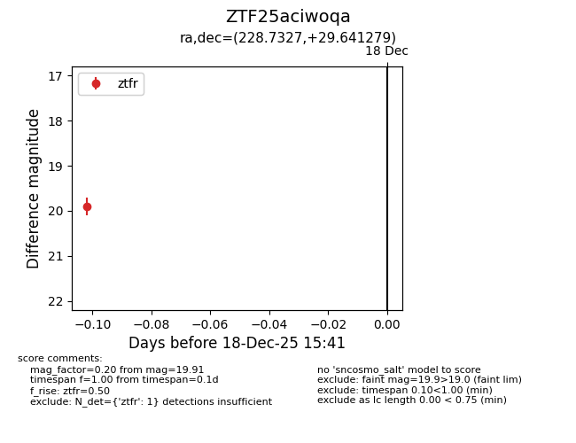
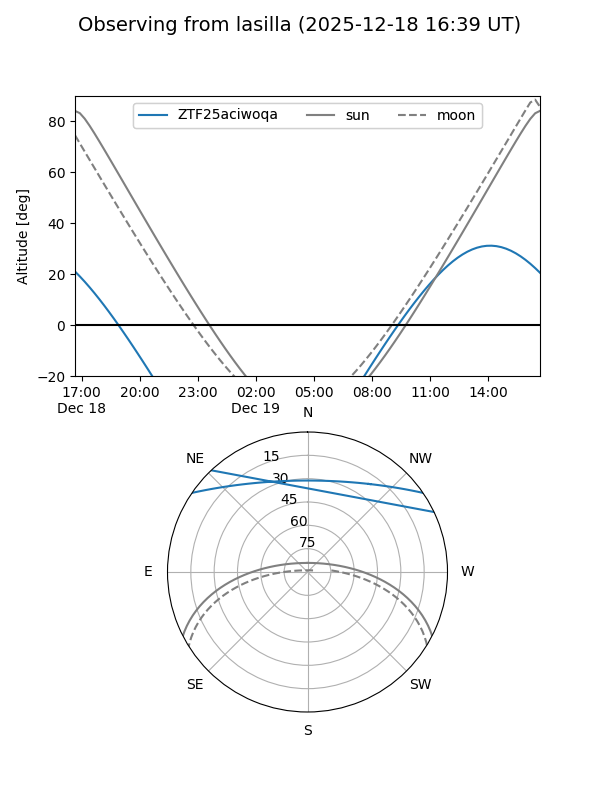
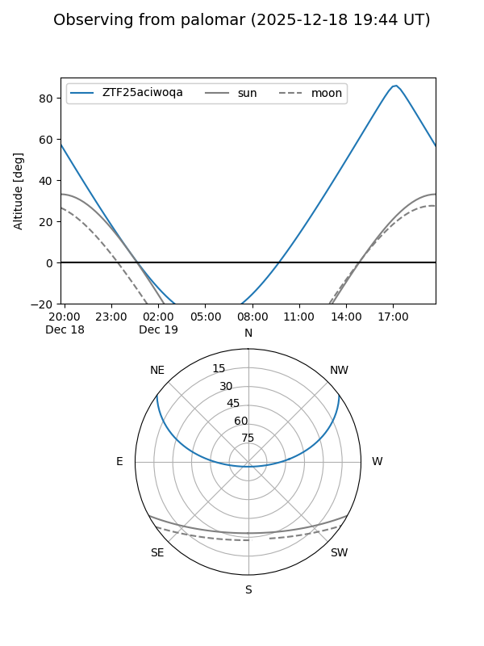

ZTF25aciwoqa
Target ZTF25aciwoqa at 2025-12-18 15:42
Aliases and brokers:
FINK: fink-portal.org/ZTF25aciwoqa
Lasair: lasair-ztf.lsst.ac.uk/objects/ZTF25aciwoqa
ALeRCE: alerce.online/object/ZTF25aciwoqa
alt names
ZTF25aciwoqa (ztf,fink_ztf)
Coordinates:
equatorial (ra, dec) = 228.7327,+29.64128
equatorial (HMS+DMS) = 15:14:55.85,+29:38:28.60
galactic (l, b) = (46.0854,+58.46413)
Photometry
last ztfr=19.91
1 ztfr detections
Lightcurve

Visibility


Additional plots